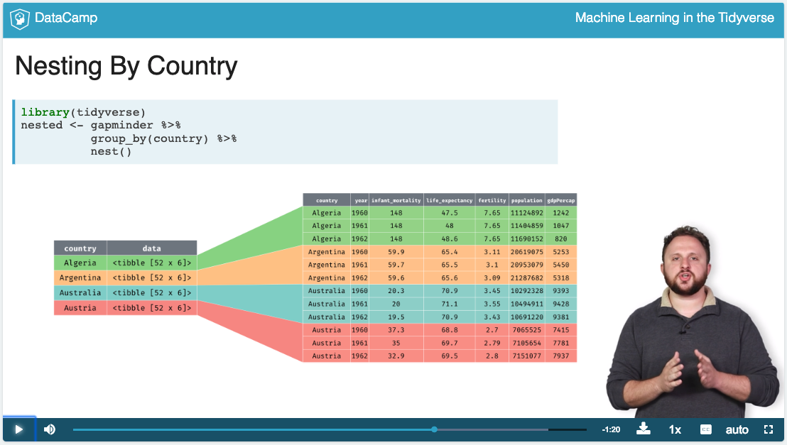
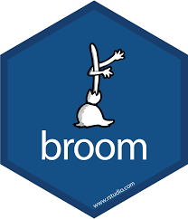
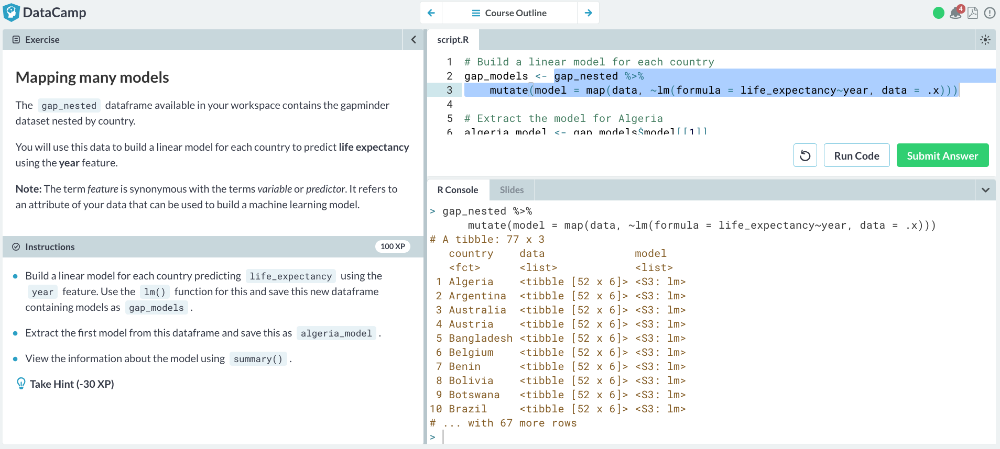

DataCamp
2 Wed 2/27 1pm
From the “Machine Learning in the Tidyverse” course complete:
- Chapter 1: “Foundations of”tidy" Machine learning".
- Chapter 2: “Multiple Models with broom”
Hints:
- I’m estimating most people to complete both these chapters in two hours or less.
- In Chapter 1 Dmitriy introduces a new kind of data structure: a “tibble” data frame with list columns. This of this as a data frame where the cells are no longer individual values, but rather “nested” data frames/lists of values.
 - In order to work with such list columns, we need to use the map function from
purrrpackage, which gets loaded whenever you runlibrary(tidyverse).

- In Chapter 2 Dmitriy uses the
broompackage which we’ve seen a few times in class so far to take “fitted model objects” and return data frames of different types.
 - The ideas in this course are very cleanly and compactly explained IMO. However, because they are so cleanly and compactly explained, the ideas are very dense. I highly recommend that you consider running code in bits and pieces instead of running the whole thing at once.
- For example in the image below I highlighted a small segment of code and ran it in the console by clicking command + enter (macOS) or control + enter if I were on Windows/unix/chromebook. That way I can dissect all steps in producing the output; open the image in a new tab if the font is too small. 
3 Wed 3/20 1pm
From the “Machine Learning in the Tidyverse” course complete:
- Chapter 3: “Build, Tune & Evaluate Regression Models”
- Chapter 4: “Build, Tune & Evaluate Classification Models”
4 Wed 4/24 1pm
In-class quiz based on two exercises meant to provide a “big-picture” look machine learning and its impact on society.
- The quiz is not meant to be difficult and taking notes are optional. As long as you make a good faith effort to both listen to the entire podcast and complete the Stitch Fix exercise in an undistracted manner, you will do fine.
- We will have an in-class discussion about these two exercises after the quiz.
- For both the podcast and the Stitch Fix exercise
- Try to view them through the lens of the modeling for machine learning framework: \(y=f(\vec{x})+\epsilon\) and \(\widehat{y}=\widehat{f}(\vec{x})\)
- Ask yourself: What are the models for machine learning predicting, but also what are they reinforcing?
- Disclosure: I’m not being compensated by StitchFix.
4.1 Weapons of Math Destruction
Listen to Econ Talk podcast (time 1h11m) of interview with “Weapons of Math Destruction” author Cathy O’Neil.
4.2 Stitch Fix
- Go to Stitch Fix and sign-up to “Take your style quiz”. If you are reluctant to use your own email, you may create a fake “burner” email at https://maildrop.cc/.
- Take the women’s style quiz.
- Log out of Stitch Fix.
- Go to Stitch Fix agin and sign-up to “Take your style quiz” using a different email. Again, you may create a fake “burner” email at https://maildrop.cc/.
- Take the men’s style quiz and observe any differences with the women’s style quiz.
If you are unfamiliar with Stitch Fix’s business model, watch this 4m video meant for consumption by a wide audience: